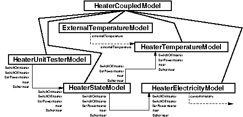
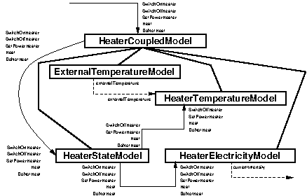

public abstract class Local_SIL_SimulationArchitectures
extends java.lang.Object
Local_SIL_SimulationArchitectures defines the local
software-in-the-loop simulation architectures pertaining to the heater
appliance.
Description
The class provides static methods that create the localsoftware-in-the-loop
real time simulation architectures for the HeaterCyPhy component. The
overall simulation architecture for the heater appliance can be seen as
follows:

The simulation architectures created in this class are local to components
in the sense that they define the simulators that are created and run by
each component. The one for unit test is meant to be executed alone in the
HeaterCyPhy component. The one for integration test is meant to
be executed within a larger simulator for the entire application component
architectures where they are seen as atomic models to be composed by a
coupled model that will reside in a coordinator component.
Implementation Invariants
invariant true // no more invariant
Invariants
invariant true // no more invariant
Created on : 2023-11-13
| Constructor and Description |
|---|
Local_SIL_SimulationArchitectures() |
| Modifier and Type | Method and Description |
|---|---|
static fr.sorbonne_u.devs_simulation.architectures.RTArchitecture |
createHeater_SIL_LocalArchitecture4IntegrationTest(java.lang.String architectureURI,
java.lang.String rootModelURI,
java.util.concurrent.TimeUnit simulatedTimeUnit,
double accelerationFactor)
create the local software-in-the-loop real time simulation architecture
for the
HeaterCyPhy component when used in integration tests. |
static fr.sorbonne_u.devs_simulation.architectures.RTArchitecture |
createHeaterSIL_Architecture4UnitTest(java.lang.String architectureURI,
java.lang.String rootModelURI,
java.util.concurrent.TimeUnit simulatedTimeUnit,
double accelerationFactor)
create the local software-in-the-loop simulation architecture for the
HeaterCyPhy component used in unit tests. |
public static fr.sorbonne_u.devs_simulation.architectures.RTArchitecture createHeaterSIL_Architecture4UnitTest(java.lang.String architectureURI,
java.lang.String rootModelURI,
java.util.concurrent.TimeUnit simulatedTimeUnit,
double accelerationFactor)
throws java.lang.Exception
HeaterCyPhy component used in unit tests.
Description

In this simulation architecture, the heater simulator consists of four atomic models:
HeaterStateSILModel keeps track of the state (switched
on, switched off, etc.) of the heater and its current power level. The
state changes are triggered by the reception of external events
directly received from the HeaterCyPhy component methods;
whenever a state change occurs, the triggering event is reemitted
towards the HeaterElectricitySILModel and the
HeaterTemperatureSILModel (except for SwitchOnHeater
that does not influence the temperature model).HeaterElectricitySILModel keeps track of the electric
power consumed by the heater in a variable currentIntensity,
which is exported but not used in this simulation of the heater in
isolation.ExternalTemperatureModel simulates the temperature
outside the room, a part of the environment. The simulated temperature
is put in an exported variable externalTemperature that is
imported with the same name by the HeaterTemperatureSILModel.HeaterTemperatureSILModel simulates the temperature
inside the heated room, using the external temperature provided by the
ExternalTemperatureModel and the current power of the heater,
which it keeps track of through the SetPowerHeater and
SwitchOffHeater events. The evolution of the inside temperature
also obviously depends upon the fact that the heater actually is
heating or not, a state which is kept track of through the events
Heat and DoNotHeat.Contract
prearchitectureURI != null && !architectureURI.isEmpty()prerootModelURI != null && !rootModelURI.isEmpty()presimulatedTimeUnit != nullpreaccelerationFactor > 0.0postreturn != nullpostreturn.getArchitectureURI().equals(architectureURI)postreturn.getRootModelURI().equals(rootModelURI)postreturn.getSimulationTimeUnit().equals(simulatedTimeUnit)
architectureURI - URI to be given to the created simulation architecture.rootModelURI - URI of the root model in the simulation architecture.simulatedTimeUnit - simulated time unit used in the architecture.accelerationFactor - acceleration factor used to execute in a logical time speeding up the real time.Heater component.java.lang.Exception - to do.public static fr.sorbonne_u.devs_simulation.architectures.RTArchitecture createHeater_SIL_LocalArchitecture4IntegrationTest(java.lang.String architectureURI,
java.lang.String rootModelURI,
java.util.concurrent.TimeUnit simulatedTimeUnit,
double accelerationFactor)
throws java.lang.Exception
HeaterCyPhy component when used in integration tests.
Description
The simulation architecture created for HeaterCyPhy real time
integration tests is very similar to the one used for unit test, except
for two points:
HeaterElectricitySILModel is moved to the local
simulator of the ElectricMeterCyPhy component to cater for
the binding of its exported variable currentIntensity
with the electricity model of the electric meter.HeaterElectricitySILModel
by making the coupled model reexporting them.Contract
prearchitectureURI != null && !architectureURI.isEmpty()prerootModelURI != null && !rootModelURI.isEmpty()presimulatedTimeUnit != nullpreaccelerationFactor > 0.0postreturn != nullpostreturn.getArchitectureURI().equals(architectureURI)postreturn.getRootModelURI().equals(rootModelURI)postreturn.getSimulationTimeUnit().equals(simulatedTimeUnit)
architectureURI - URI to be given to the created simulation architecture.accelerationFactor - acceleration factor used to execute in a logical time speeding up the real time.Heater component.java.lang.Exception - to do.